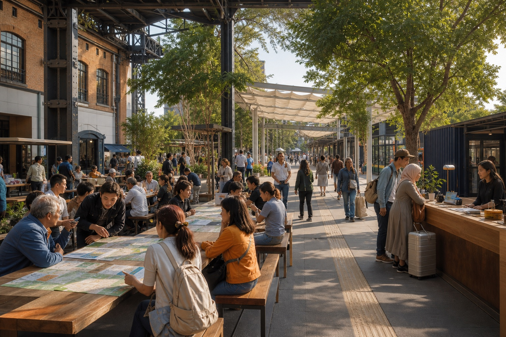
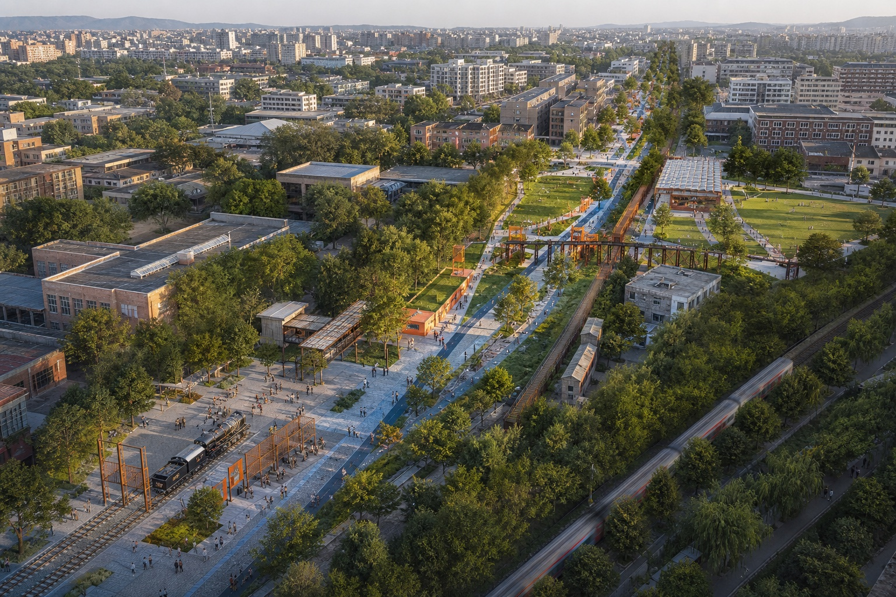
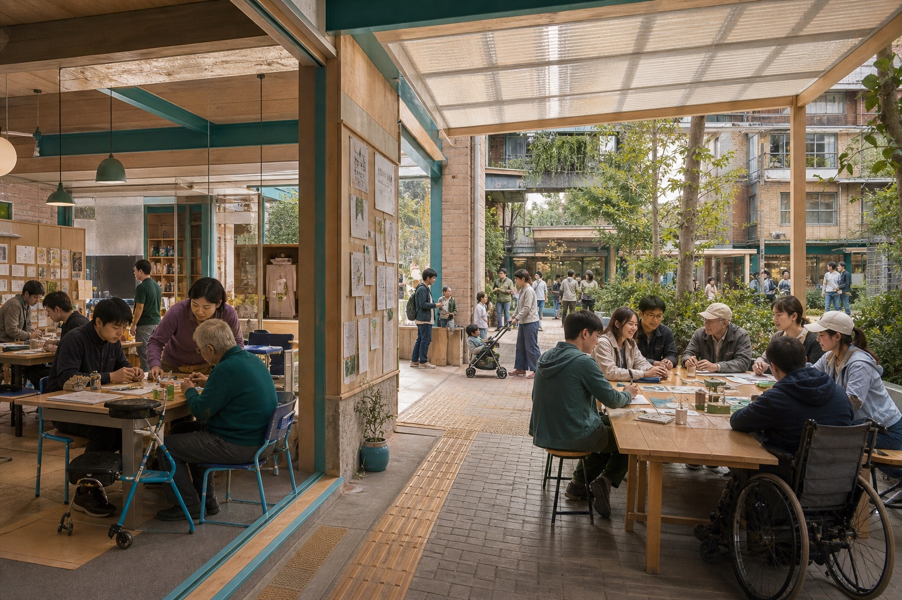
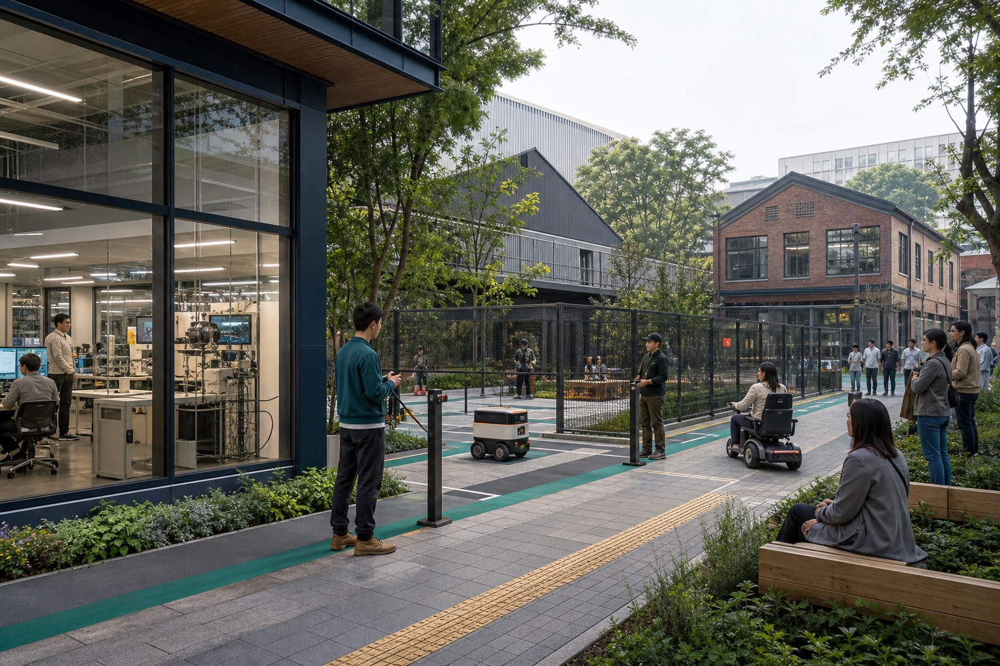
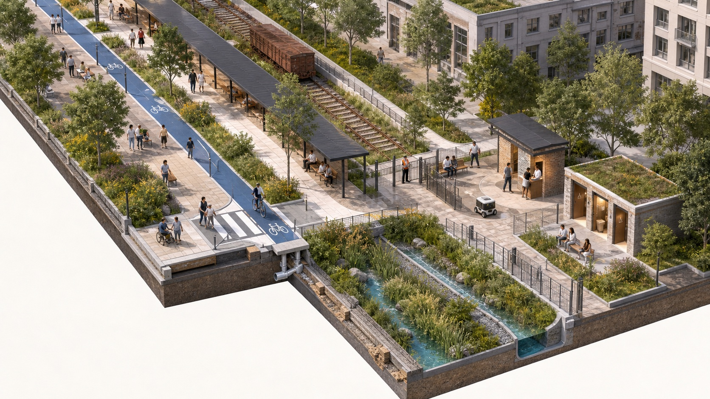
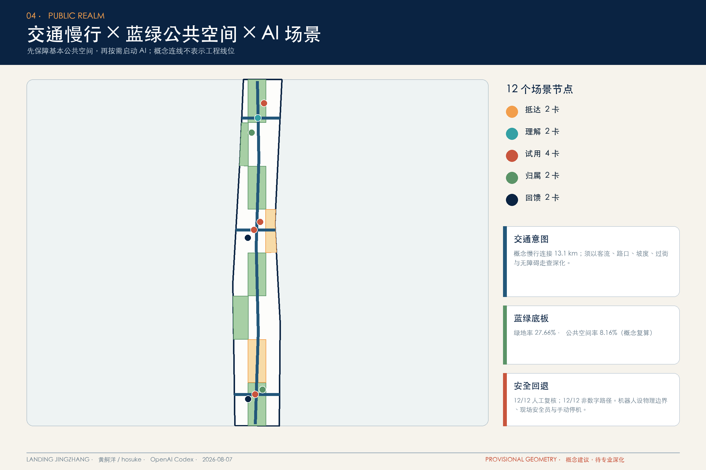
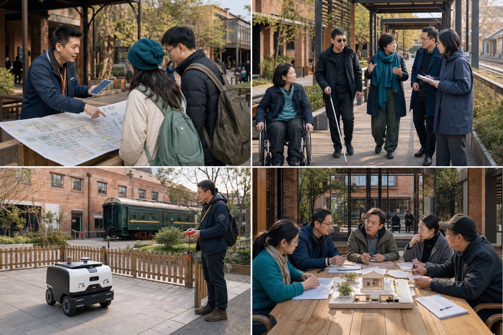
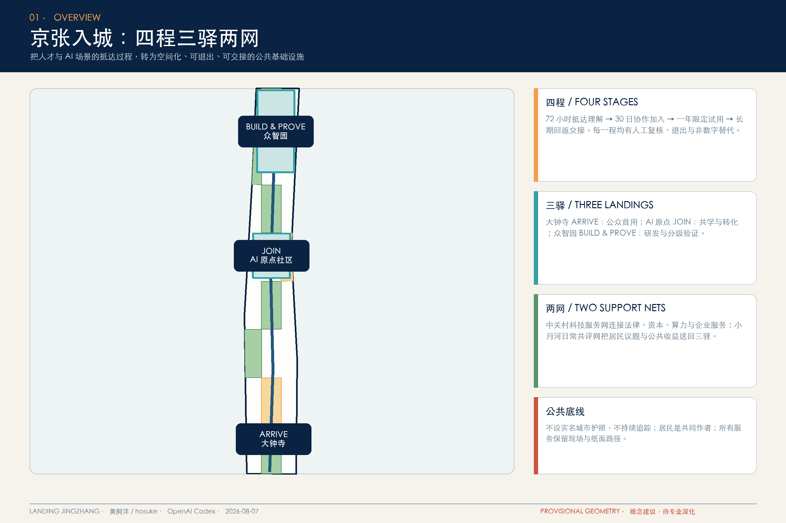
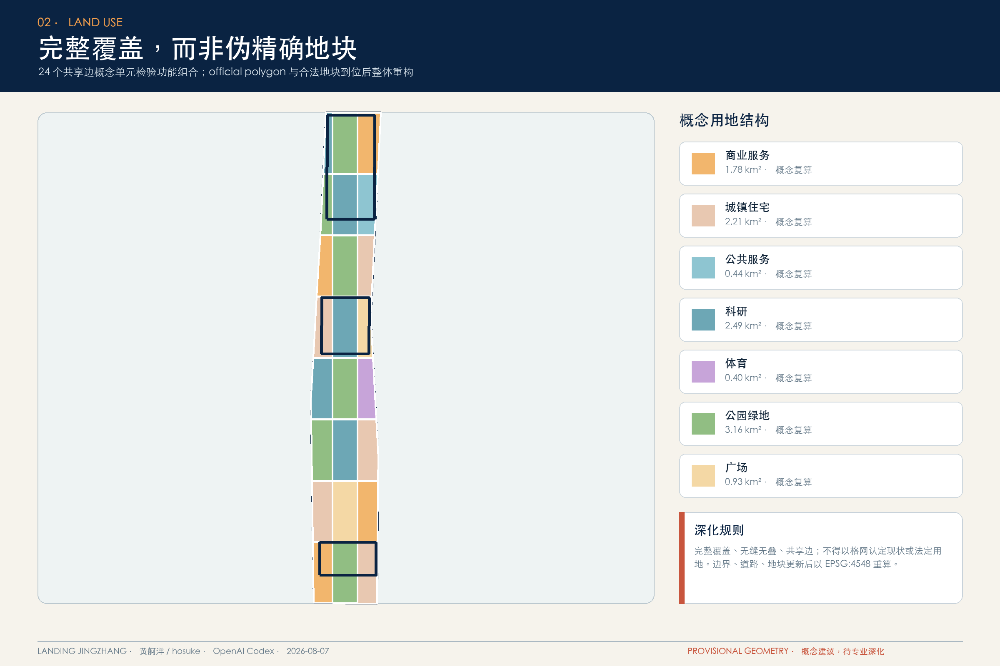

01 ARRIVE · 大钟寺
第一日论坛、人工服务台、纸面地图与无障碍抵达；先理解城市，再启动数字服务。
让每一次抵达，成为共同建设的开始。以“四程三驿两网”把抵达、理解、试用、归属与回馈，转成可步行、可体验、可退出、可交接的公共基础设施。

图像边界：本页六张空间场景为 AI 生成概念表现，不代表现状照片、官方红线、确定建筑方案或政府承诺；正式证据仍以 GeoJSON、metrics、三张矩阵及五张派生证据图为准。
视觉叙事与结构化方案同源，但把原先抽象的数据骨架转成可感知的公共生活。
大钟寺 ARRIVE、AI 原点 JOIN、众智园 BUILD & PROVE；皆为可供专业团队深化的参考场景。

第一日论坛、人工服务台、纸面地图与无障碍抵达；先理解城市，再启动数字服务。

共享首层、共学长桌与照护友好步行环，让开发者与居民共同定义问题及公共收益。

仿真、受控试验、限定真实三层门槛；物理围合、现场监护、手动停止与公众观察并存。

先保障厕所、座椅、树荫、无障碍和普通通行，再按需启动 AI。


人工迎接、无障碍共评、受控测试、社区交接；对应十二张场景卡的共同治理底线。

概念表现负责说明空间体验；下列图层、指标与矩阵负责复算和审计。


页面值严格对齐 metrics.json；投影采用 EPSG:4548。

把画面重新接回可审计的任务、资料边界与待补条件。
本页完全离线，不加载 CDN、地图瓦片、脚本、外部字体、API、iframe、表单或追踪。当前 polygon 为仓库 provisional geometry，仅供概念比较和内容评审，不作为精确红线、审批、征拆或工程依据；official polygons 到位后须整体重算。